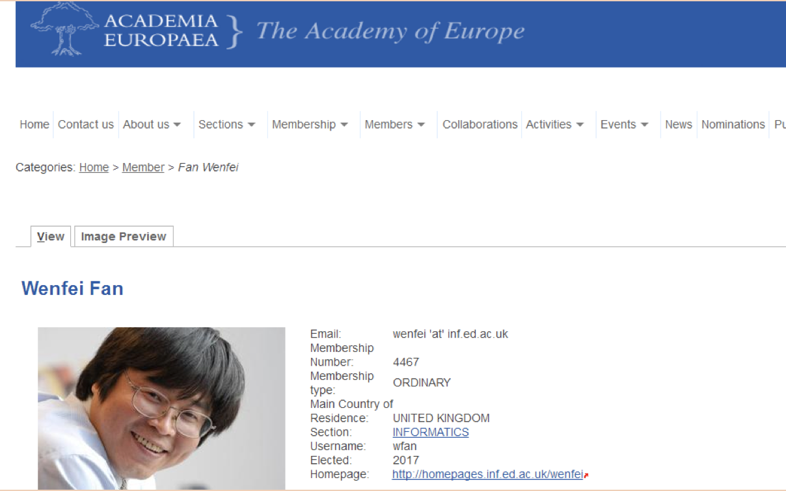

2017年8月，欧洲科学院宣布北航“千人计划”专家、大数据科学与脑机智能高精尖创新中心首席科学家樊文飞教授当选为欧洲科学院院士。欧洲科学院主席Sierd Cloetingh教授向樊院士致函宣布了这一消息并致以祝贺。
欧洲科学院（Academia Europaea或The Academy of Europe），全称欧洲人文和自然科学院，其总部位于英国伦敦，是由欧洲35国科学部长倡导创立，并由英国皇家学会等代表欧洲国家最高学术水平的国家科学院共同发起成立的国际科学组织。科学院分20个学部，其学科领域涵盖人文科学、社会科学、自然科学和科学技术等，是国际上跨地域和学术领域最广泛、学术地位最高、影响最大的科学组织之一 (见百度百科)。
欧洲科学院院士主要从欧洲各国科学院院士中选出，代表欧洲人文和自然科学界最优秀的科学精英和学术权威。外籍院士选自与欧洲有长期合作的学者。院士候选人选拔过程严格，首先由来自不同国家的院士推荐到科学部，经学部初审后推荐到提名委员会进行通讯评审，最后由欧洲科学院的专门委员会审核通过。
欧洲科学院目前有3707名(含外籍）院士，包括73位诺贝尔奖获得者，6位图灵奖获得者，15位菲尔兹奖获得者，其中有236位计算机信息科学领域的院士。2017年，共有84位来自不同领域的杰出科学家入选欧洲科学院 (含外籍）院士。
据悉, 樊文飞教授此次当选，缘由其在大数据计算和数据质量理论、算法与应用领域的杰出贡献。樊教授提出的大数据有界计算理论，已在工业界得到验证, 增进查询效率高达10万倍（5个数量级）；他提出的基于不动点计算的并发模型，实现了串行图算法的自动并发化和大众化；他奠定了数据质量五个核心问题（一致性、精确性、时效性、完整性、实体识别）的理论基础，引发了国际学术界对数据质量这个重要研究领域的重新定位；他的工作以独创性、理论与应用结合被国际学术界称道。作为数据库历史上仅有的两个“大满贯”得主之一，樊院士囊括了国际数据库领域四大顶级理论和系统会议的最佳论文奖和时间检验奖 （SIGMOD 2017， PODS 2010 和2015，VLDB 2010， ICDE 2007）；作为长江学者和千人计划专家回国效力的十年间，他至少获得了八项国际大奖和荣誉，并对国内两个973项目做出了重要贡献。
樊院士还是英国爱丁堡大学信息学院主任教授，英国爱丁堡/苏格兰皇家科学院院士和美国计算机协会会士（ACM Fellow)。他的团队目前在国内致力于打造大数据查询系统（BEAS）和图计算并发系统（GRAPE），以填补中国大数据计算引擎在国际学术界和工业界的空白。
